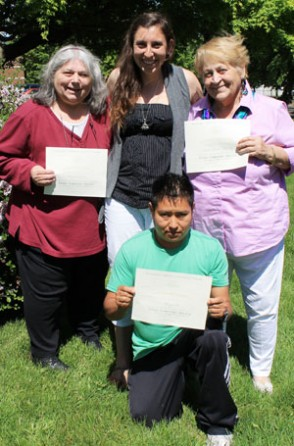

Who we are

OUR MISSION is to provide the residents of Bridgeport with program opportunities
and facility resources for the purpose of promoting individual growth and community cohesiveness.
We fulfill this through our direct services and by collaborating with community and facility partners.
We also do this by connecting people requesting information,
programs or forms of aid with agencies in the Greater Bridgeport community.
The Burroughs Community Center offers a variety of programs including the arts, fitness, financial literacy as well as meeting space for clubs.
The Burroughs Community Center is also a Nonprofit Center that houses several not-for-profit organizations.
Each organization has its own office space and access to meeting rooms, a board room, a fully equipped kitchen and a large parking lot.
Located in the Black Rock section of the West End of Bridgeport,
this beautiful historic building is a welcoming presence for clients and visitors of the organizations
who are our “ facility partners. ”
If you or your organization is a not-for-profit
and interested in becoming a facility partner please contact the Executive Director at 203-334-0293 or info@burroughscc.org